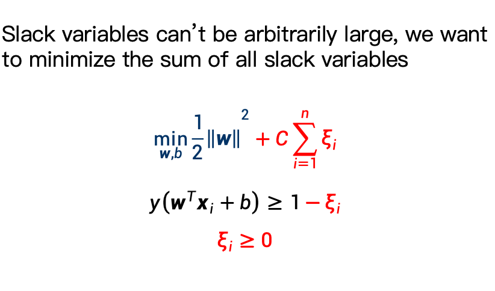
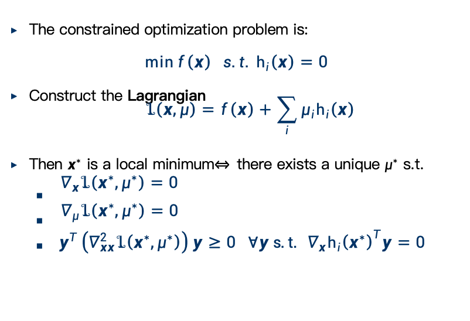

Lesson4 Discriminant Functions and Classifiers
Discriminant Functions and Classifiers
binary to multi-class
- one to rest
- 每个类别一个
- 共c个
- one to one
- 为每对类别训练一个二分类器
- 投票
- 共需要\((c-1)*c / 2\)个分类器
-
ecoc 纠错输出码
h是分类器的集合，c是类别，1/-1表示正反，0表示不判别。
Regression to Classification
我们要把它映射为离散值。
Sigmoid Function (logistic function)
特别天然地被作为一个映射，可以将负无穷到正无穷的值映射到0到1之间。
Logistic Regression 逻辑回归
(实际是个分类问题的方法)
\(P(y_i = 1 | x_i, a) = \sigma(ax_i) = ...\) \(P(y_i = -1 | x_i, a) = 1 - \sigma(ax_i) = \sigma(-ax_i)\) \(P(y_i = ±1 | x_i, a) = \sigma(y_iax_i)\)
然后依旧最大似然估计：
逻辑回归的损失函数：
- \(E(a) = \sum \log(1 + e^{-y_ia^Tx_i})\)

Gradient Descent 梯度下降
- 一阶迭代的优化算法
- 一定可以找到局部最优解
其思路就是走的足够小，形成一个趋势：
- if \(b = a - γ\nabla J(a)\)，then J(b) ≤ J(a)
停止的条件就是减去的这个东西小于某个\(\theta\)
负梯度方向是函数值最速下降的局部方向
我们考虑泰勒展开，所以梯度下降的本质就是一阶/线性上的泰勒展开。
这些就有点仙家对话了，关系不大应该。概括一下就是线性拟合的情况，使用梯度下降；而牛顿法是在展开到二次的情况下使用的。
SVM support vector machine
if :
- \(w^Tx > 0\) for examples from positive class
- \(w^Tx < 0\) for examples from negative class
then a weighted vector \(w\) is called a seperating vector: is it unique?
显然不，我们看下面的这个例子，有很多条线可以实现分割。
拓展到三维，我们看点到面的一个距离：
一个非常trivial的推导：
max min r 形成了一个最大化最小值的问题
Geometrical Margin
geometrical margin即下文定义的\(γ\)
\(γ = y\frac{w^Tx + b}{||w||}\)
乘上这个y是为了保证正负。
Maximum Margin Classifier
- goal: find the hyperplane that maximizes the margin
- 比较抽象的goal理解：出现微小错误的时候对于分类结果的影响最小
- 真的抽象吗，感觉挺直接的（×）
从数学角度的goal:
我们采用数据集中离超平面最近的点的距离来作为衡量标准，实现最小值最大化。
由于只需要使\(w\)与\(b\)保持恒定就能维持超平面的位置，这样我们能使得\(y_i(w^Tx_i + b)\)无限大，因此我们恒定距离超平面最近的点的值为1.
这些向量叫做支持向量。
最小化 \(‖w‖\) 和最小化 \(\frac{1}{2}‖w‖^2\) 在解的本质上是等价的，但后者数学性质更好。
上文提到的模型（称为硬间隔SVM，即在\(y(wx+b) \geq 1\)约束下最小化\(\frac{1}{2}||w||^2\)）存在一些问题，比如没有修正噪声，过度理想化等。我们引入软间隔SVM。
Soft Margin SVM
其最重要的一点是引入slack variables，允许一些样本违反间隔约束，但是对其施加惩罚。

参数C表示惩罚程度。
Unconstrained Optimization
优化：在一系列的约束条件下，求出最大值或者最小值。
- 无约束
- 仅有等式约束
- 仅有不等式约束
- 混合等式与不等式约束
有局部最大/小值的充分必要条件：
- 此处梯度为0
- Hessian矩阵正/负定
圆上的某点的梯度方向是圆心到此点的方向。
在这一优化中，我们需要保持：
- \(\delta x\)与\(∇_xh(x_F)\)正交
- \(\delta x * (-∇_xf(x_F)) > 0\)
在\(∇_xf(x_F)=μ∇_xh(x_F)\)的情况下（等价于平行），我们实现了最小值
拉格朗日乘子法
\(L(x, u) = f(x) + uh(x)\)

三个条件，两个一阶，一个二阶半正定。
来到不等式的情况：
这个很trivial，因为这个约束实际而言是inactive的，此时取得局部最小值的条件为\(∇_xf(x^*) = 0\)且H矩阵为正定的。
不太类似的情况，约束active的时候：
实际上而言，约束active的时候，小于等于的约束将被转换为等于。
局部最小值在于\(-∇_xf(x)\)与\(∇_xg(x)\)方向相同的情况，局部最值在于二者平行的情况下，即：
局部最小解的条件为
- \(g(x^*) = 0\)
- \(-∇_xf(x^*) = λ∇_xg(x^*)\), \(\lambda > 0\)
- \(y^T∇_{xx}L(x^*)y > 0\), 对于所有与\(∇_xg(x)\)正交的y
KKT条件
自己得写一遍：
- \(∇_xL(x^*, \lambda^*) = 0\)
- \(\lambda^* > 0\)
- \(\lambda^*g(x^*) = 0\)
- \(g(x^*) \leq 0\)
- Plus positive semi-definite constraints on \(∇_xx^2L(x^∗,λ^∗)\)